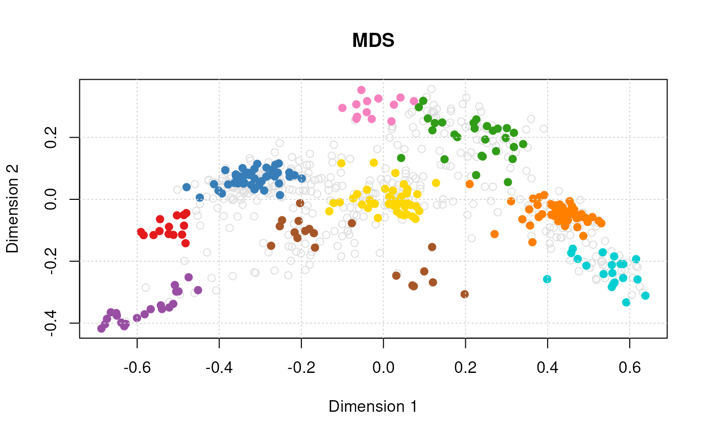
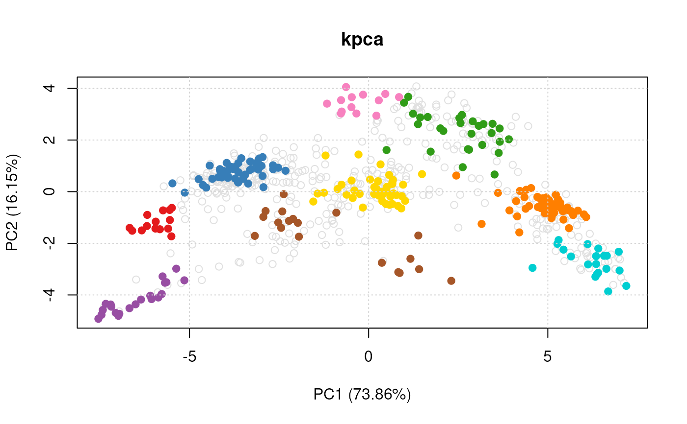
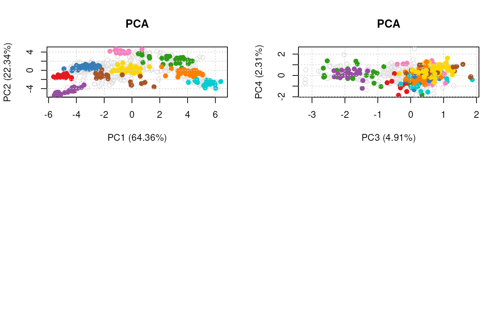

Class SpatProtVis
SpatProtVis-class.RdA class for spatial proteomics visualisation, that upon instantiation,
pre-computes all defined visualisations. Objects can be created with
the SpatProtVis constructor and visualised with the plot
method.
The class is essentially a wrapper around several calls to
plot2D that stores the dimensionality reduction
outputs, and is likely to be updated in the future.
SpatProtVis(x, methods, dims, methargs, ...)
Arguments
| x | An instance of class |
|---|---|
| methods | Dimensionality reduction methods to be used to
visualise the data. Must be contained in |
| dims | A list of numerics defining dimensions used for
plotting. Default are |
| methargs | A list of additional arguments to be passed for each
visualisation method. If provided, the length of this list must be
identical to the length of |
| ... | Additional arguments. Currently ignored. |
Slots
vismats:A
"list"of matrices containing the feature projections in 2 dimensions.data:The original spatial proteomics data stored as an
"MSnSet".methargs:A
"list"of additional plotting arguments.objname:A
"character"defining how to name the dataset. By default, this is set using the variable name used at object creation.
Methods
plot:Generates the figures for the respective
methodsand additional arguments defined in the constructor. If used in an interactive session, the user is prompted to press 'Return' before new figures are displayed.show:A simple textual summary of the object.
Author
Laurent Gatto <lg390@cam.ac.uk>
See also
The data for the individual visualisations is created by
plot2D.
Examples
library("pRolocdata") data(dunkley2006) ## Default parameters for a set of methods ## (in the interest of time, don't use t-SNE) m <- c("PCA", "MDS", "kpca") vis <- SpatProtVis(dunkley2006, methods = m)#> Producting PCA visualisation...#> Producting MDS visualisation...#> Producting kpca visualisation...vis#> Object of class "SpatProtVis" #> Data: dunkley2006 #> Visualisation methods: PCA, MDS, kpca#> Done.#> Done.## Setting method arguments margs <- c(list(kpar = list(sigma = 0.1)), list(kpar = list(sigma = 1.0)), list(kpar = list(sigma = 10)), list(kpar = list(sigma = 100))) vis <- SpatProtVis(dunkley2006, methods = rep("kpca", 4), methargs = margs)#> Producting kpca visualisation...#> Producting kpca visualisation...#> Producting kpca visualisation...#> Producting kpca visualisation...#> Done.## Multiple PCA plots but different PCs dims <- list(c(1, 2), c(3, 4)) vis <- SpatProtVis(dunkley2006, methods = c("PCA", "PCA"), dims = dims)#> Producting PCA visualisation...#> Producting PCA visualisation...#> Done.